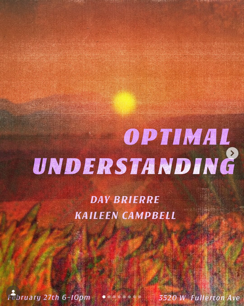

Optimal Understanding
Very excited to Announce “Optimal Understanding” A duo show featuring Kaileen Campbell @kaileencampbell & Day Brièrre @biomorphia at @positivespacestudios
Optimal understanding is the pursuit of the best possible insight, performance, or solution under specific constraints!
Day Brièrre tells stories thru image & uses many different surfaces as a conduit. It is as if she speaking to you from a place only she is aware of. This adds a deeply mystical element to how her work is viewed!
Kaileen Campbell’s work is engaged with process. She begins with little to no preconceived notions of what a piece will become. She carves, pokes, adds, and subtracts until the forms feel settled. There are times when chunks of a piece or an entire work is thrown out through this process. The sense, pulp, or ecosystem of the finished piece is not always clear at once and on occasion the work’s meaning does not become intelligible until months after the work has settled. Sporadically, the work comes to recognize itself by name or by title, only after the benefit of critical distance.
Date : February 27th , 6-10
Location : 3520 W Fullerton ave,
Chicago, Illinois 60647